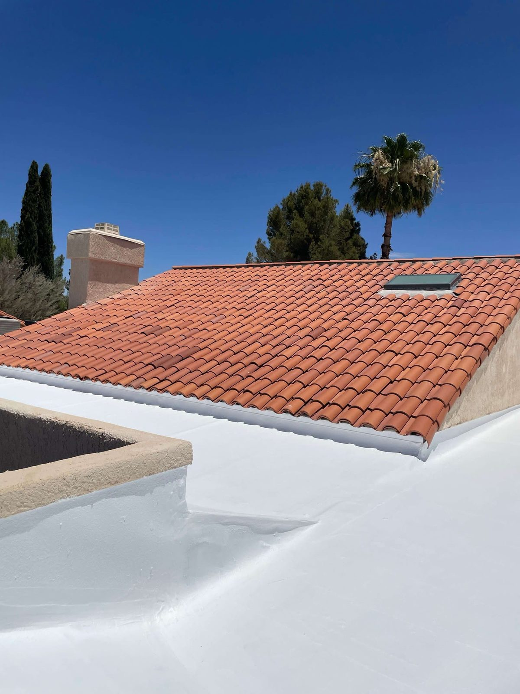

Resources & Guides
Tucson Roofing Resources & Homeowner Guides
Straight, useful answers to the roofing questions we get asked the most, material choices, when to replace, what repairs run, and how to deal with storm damage and insurance.
- Material guides
- Repair vs. replace
- Storm & insurance help
- No sales fluff
Learn First
Make confident roofing decisions
A roof's a big decision, and knowing a little going in takes the stress off. These guides hit the questions we get every week, written plain, no upsell.
Want a real answer for your own roof? Nothing beats a free inspection. But start here to get a handle on your options.
- Desert-specific material advice
- Honest cost expectations
- Repair-vs-replace guidance
- Storm-damage & insurance basics
Material Guides
Tile vs. shingle vs. metal — what actually works in Arizona.
Lifespan & Timing
How long roofs last here and when replacement makes sense.
Storm & Insurance
What to do after monsoon or hail damage, and how claims work.
Guide
Best roofing materials for Arizona
There's no across-the-board best, just the best fit for your house, budget and goals. Tile lasts and looks classic, but the underlayment under it needs redoing every 20 to 25 years. Shingle's the cheap, fast option as long as it goes on with heat-rated products and good ventilation.
Metal reflects the heat and'll go 40 to 70 years with barely any upkeep. Reflective coatings are great on flat and low-slope roofs, they add insulation and knock down the cooling bill. We'll help you weigh them for your particular house.
- Tile: longevity + Southwest looks
- Shingle: value + speed
- Metal: durability + reflectivity
- Coatings: flat-roof efficiency
Guide
Signs you need a new roof
How often should you replace a roof? Depends on the material and how it's held up. But a few signs point pretty clearly to replacing it instead of patching it again.
Leaks popping up in a few different spots, cracked or slipped tile all over, shingles losing their granules and curling, daylight or moisture up in the attic, or a roof that's just past its years, all of that says it's time. If you're not sure, a free inspection settles it.
- Leaks in several different spots
- Widespread tile or shingle damage
- Granule loss, curling, bald spots
- Attic moisture or daylight
Guide
Storm damage & insurance claims
After a monsoon or a hailstorm, document everything. Snap photos of the damage inside and out, write down the date, and stay off a wet or busted roof. Sudden storm damage is often covered by your homeowner's policy.
We do free storm-damage inspections with photo documentation, and we'll meet your adjuster up on the roof so nothing real gets missed. Honest help start to finish.
- Photograph all damage promptly
- Note the storm date
- Get a documented inspection
- We can meet your adjuster
FAQ
Common Roofing Questions
Still wondering about something? Call us at 520-753-1758 — straight answers, no pressure.
Ask Us DirectlyHow often does a roof need to be replaced in Tucson?
Shingle roofs usually run 15 to 25 years here. Tile can go 50-plus, though the underlayment under it needs redoing every 20 to 25. Good metal'll last 40 to 70. The heat and UV speed everything up, so without solid ventilation and underlayment you're looking at the shorter end of those numbers.
What are the clearest signs I need a new roof?
Leaks in a few different spots, cracked or slipped tile all over, shingles losing granules and curling, and moisture or daylight in the attic. A free inspection tells you whether a repair or a replacement is the smarter call.
What's the best roofing material for Arizona?
Depends on your house and budget. Tile and metal last the longest and handle the heat great, shingle's the value pick, and reflective coatings are the move on flat roofs. We'll point you to the best fit for your place.
How much does roof repair cost?
Small repairs run a few hundred bucks; bigger water-intrusion or underlayment work costs more. The inspection's free and the estimate's itemized in writing, so you know before we start anything.
Is storm or monsoon roof damage covered by insurance?
Sudden storm, wind, hail and monsoon damage usually is. Document everything and get it professionally inspected, we'll get you the photo documentation your claim needs and work with your adjuster.
Still have a roofing question?
Skip the guessing. Get a free, documented inspection and a straight answer for your roof.
Let's Talk
Let's Take a Look at Your Roof
Tell me what's going on up there — a leak, storm damage, an old roof that's seen better days, or a full replacement — and we'll get you on the books for a free inspection.